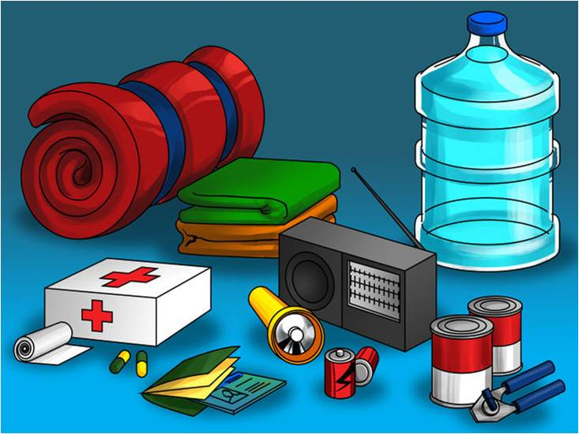
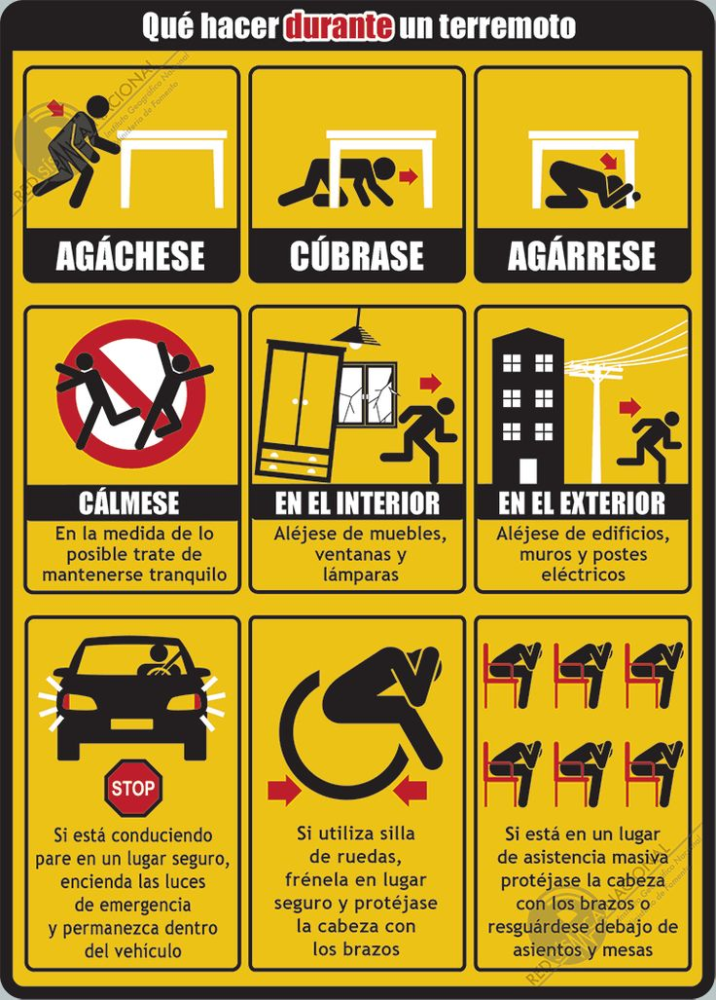
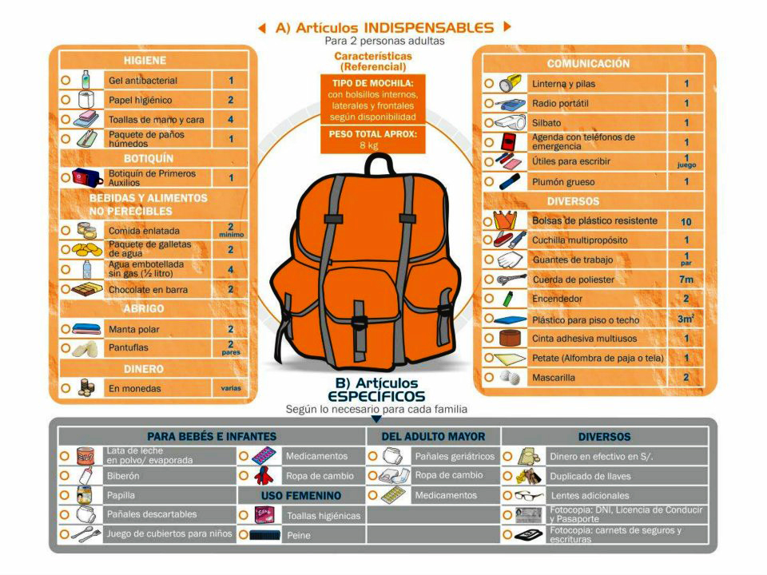

Antes
Verifica que tu casa haya sido construida en lugares apropiados, no en zonas donde han ocurrido desastres naturales anteriormente.
Siembra árboles y arbustos, ya que estos pr1porcionan estabilidad al suelo.
Participa de las iniciativas de Defensa Civil y conoce las zonas de seguridad y rutas de evacuación.
Ten a la mano una mochila o maletín de emergencia.

Durante
Mantén la calma y presta atención a la alarma e indicaciones de los Comités de Defensa Civil.
Evacúa rápidamente junto a tu familia hacia los lugares establecidos.
No olvides llevar contigo la mochila de emergencia.
Después
Evita caminar por donde pasó el desastre natural.
Solo cuando Defensa Civil lo indique, apoya las operaciones de rescate, así como la rehabilitación de las calles y caminos de tu comunidad.
